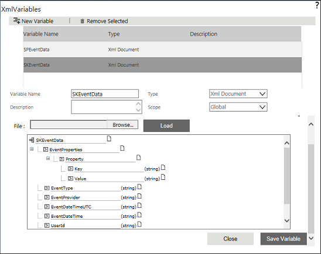
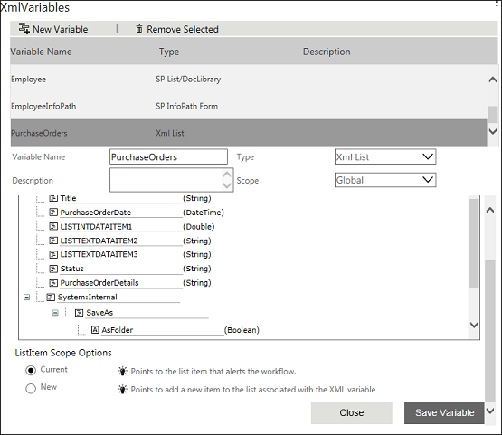
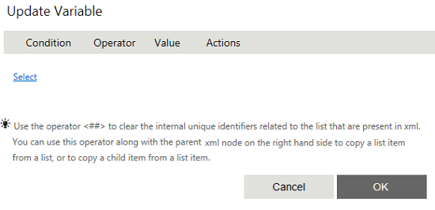
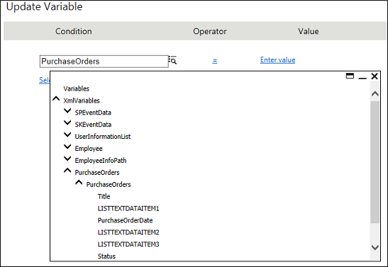
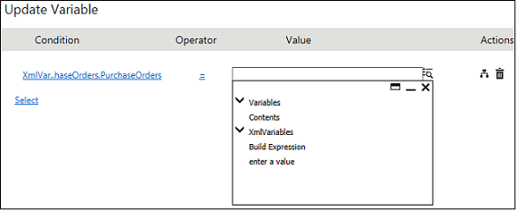
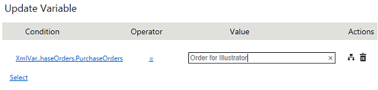

No
Updating the List Item that Alerted the Workflow
AVEVA Work Tasks allows you to update the list item that alerted the workflow using XML List Type XML Variable. Update Variable activity can be used to add/update an item to the list. To update an item, you need to select the scope as Current from Choose the List Item to Work on options. You can also use List Navigator Activity to set the scope. With the help of a scenario, we will explain this function.
Assume that you have created a list called Purchase Orders with the following fields and alerted the workflow.
- Reference Number
- Purchase Order Date
- Raised By User
- Deliver To User
- Status
- Purchase Order Details
- Item Name
- Quantity
- Unit Price
- Item Total
- Total Purchase amount
Now you want to update an item in the same list. Follow the procedure given below.
To update the list item that alerted the workflow
- Login to the Enterprise Console and go to the Workflow Designer page.
- You need to create an XML List type XML Variable for the Purchase Orders list. If the variable is not created, follow the below mentioned procedure to create.
- Click the edit icon in the XMLVariables property from the Start Activity Properties. The following screen is displayed.
 - Click New Variable to add a new variable.
- Type the variable name as 'purchaseorders'.
- Select type as XML List from Type the drop-down list.
- Type the List name in the Select List field or click the icon to select the list. In this case, select 'Purchase Orders' list.
- Select Current as the scope from the ListItem Scope Option to point to an item in the Purchase Orders list.
 - Now you can see the XML nodes in a tree-view that are mapped to the controls while creating the list.
- Click Save Variable. A message is displayed saying 'Variable Updated'. Close the window.
Note: If you set the scope as New while creating the XML List type XML variable, you can change it to Current using List Navigator activity. - Drag and drop Update Variable activity to update an item in the list.
- Click the edit icon in the Set Variables property. The following screen is displayed.
 - Click the Select link and select the respective field of the XML List type XML Variable created for the list (in this case 'purchaseorders'). The fields displayed in the tree-view represent the XML nodes of the controls in the list.
 - Select a field for which you want set the value from the tree menu. Enter the value for the field in the right-hand side text box or click the icon to set the value.
 - If you want to set the value, select 'enter a value' from the tree-view and then enter the value. Also, you can select variables or contents or any XML variables nodes directly by selecting the respective node from the tree-view. If you want to combine multiple node values, you can build an expression by selecting Build Expression.
 - The same way, you can set the value for other fields that you want to update. In this case, you are only updating the field 'Title' which has the value 'Order for Illustrator'.
- Click OK. When you execute this workflow, the item get updated based on the value that you have set.